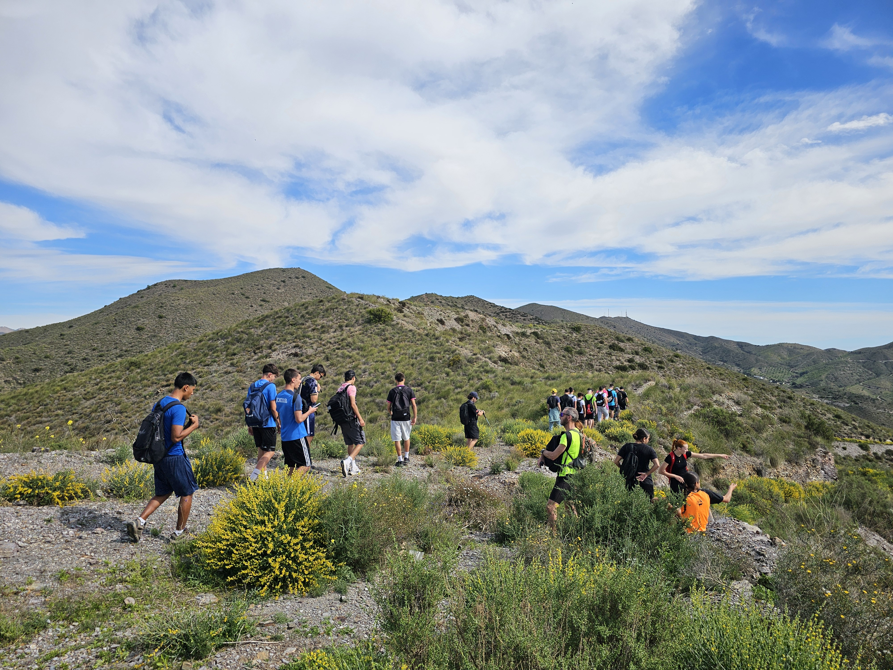
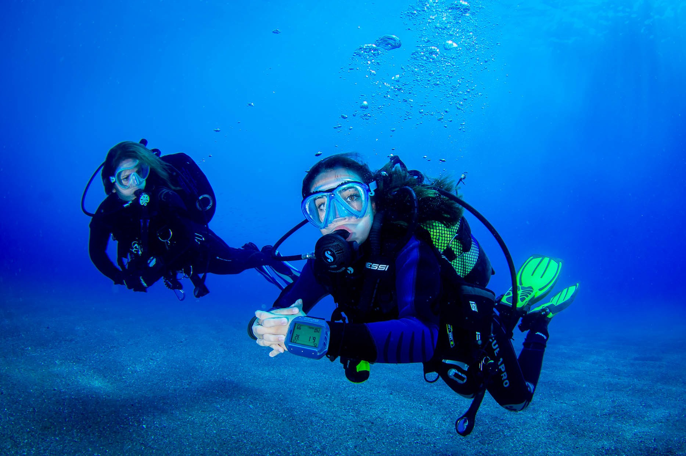

Qué es NOMADX
UNA APP SOCIAL
ADN deportivo Matching por actividad Feed de aventuras Tribus deportivas Mapa de spots Planes y eventos Logbook Safety Radar Insignias Reputación NOMADX Pro Intelligence
UNA APP SOCIAL
PARA DEPORTISTAS REALES
NOMADX no es una empresa de aventura ni un catálogo de servicios. Es un prototipo avanzado de red social deportiva global para conectar personas, clubs, guías, instructores, creadores y comunidades por afinidad deportiva, nivel, entorno, seguridad, intereses y experiencias.
Cómo funciona NOMADX
DE TU PERFIL
01
02
03
04
05
DE TU PERFIL
A TU TRIBU
Crea tu ADN deportivo
Define deportes, nivel, objetivos, entornos, experiencia, disponibilidad y criterio de seguridad.
Perfil vivoDescubre deportes, spots y tribus
Explora categorías, comunidades, lugares guardables y rutas recomendadas por la plataforma.
ExploraciónEncuentra personas compatibles
Matching por afinidad deportiva, nivel, distancia, disponibilidad, historial y cultura de seguridad.
CompatibilidadOrganiza o únete a planes
Crea quedadas, revisa requisitos, cupos, material, riesgo y estado del grupo antes de salir.
PlanesRegistra tu aventura
Guarda aprendizaje, condiciones, compañeros, fotos, dificultad, material y reputación en el Logbook.
Logbook
ADN deportivo
TU IDENTIDAD
TU IDENTIDAD
EN MOVIMIENTO
El ADN deportivo convierte tus prácticas, preferencias y forma de moverte en una base útil para descubrir personas, planes, deportes y progresión. Es funcionalidad de app, no biografía personal.
Trail runningEscaladaMTBNatación outdoorFunctional trainingKayak
Técnica78%
Experiencia66%
Seguridad88%
Compañerismo91%
Resistencia72%
Exploración84%
+400 deportes · Fallback visual activoCATÁLOGO
CATÁLOGO
DE DEPORTES
Kayak
Riesgo medio · entorno agua abierta · chaleco, pala, comunicación.
Planes · Logbook · MatchingBuceo recreativo
Riesgo medio/alto · inmersión · certificación, compañero, equipo revisado.
Logbook · MatchingTrail running
Riesgo medio · sendero y desnivel · zapatillas, hidratación, GPS.
Planes · LogbookEscalada
Riesgo medio/alto · pared o rocódromo · cuerda, arnés, casco.
Matching · LogbookMTB
Riesgo medio/alto · senderos y bike parks · casco, protecciones, kit reparación.
Planes · LogbookParapente
Riesgo alto · zona de despegue · meteorología, piloto, permisos.
Logbook · ProEntrenamiento funcional
Riesgo bajo/medio · parque, box o exterior · técnica, carga, movilidad.
Planes · FeedSkate / park
Riesgo medio · parque urbano · casco recomendado, progresión y comunidad.
Tribus · LogbookSnowboard
Riesgo medio · nieve y pista · casco, condiciones y nivel técnico.
Logbook · MatchingTrekking
Riesgo medio · autonomía · mochila, mapa, agua, ruta y plan de retorno.
Planes · SpotsCoasteering
Riesgo alto · costa y roca · formación, mar favorable, casco, neopreno.
Safety · LogbookVía ferrata
Riesgo alto · vertical equipada · disipador, arnés, casco, experiencia.
Safety · Pro
Matching deportivo · Datos demo del prototipo
ENCUENTRA PERSONAS
ENCUENTRA PERSONAS
QUE SE MUEVEN COMO TÚ
MT
Marina Trail
Trail · trekking · nivel medio · disponibilidad sábado
94% compatibleVC
Vertical Crew
Escalada · ferrata · nivel avanzado · badge Safety
91% compatibleOR
Outdoor Runner
Trail · entrenamiento · nivel intermedio · mañana
89% compatibleMF
MTB Flow
MTB · bike park · nivel medio/alto · grupo pequeño
87% compatibleFC
Freedive Club
Apnea · agua · nivel certificado · compañero obligatorio
84% compatiblePG
Pro Guide Verified
Guía verificado · montaña · primeros auxilios · Pro
Verificado
Feed de aventuras
PUBLICACIONES


PUBLICACIONES
CON CONTEXTO DEPORTIVO

@marina_trail · aventura completada
Ruta trail costera registrada en Logbook
14 km, viento moderado, aprendizaje de ritmo y badge Perfil activo.
TrailRiesgo verdeLogbook
1.2k likes · 86 comentarios · 240 guardados@vertical_crew · consejo de seguridad
Checklist de compañero antes de escalar
Casco, nudo, asegurador, comunicación y plan de retirada.
EscaladaSafetyGuardado
820 likes · 54 comentarios · 410 guardados@mtb_flow · quedada publicada
Salida MTB nivel medio con cupos limitados
Grupo de 8, protecciones recomendadas, ritmo social y ruta editable.
MTBEventoRiesgo amarillo
640 likes · 32 comentarios · 120 guardados
@freedive_club · nueva entrada
Buceo recreativo con compañero validado
Visibilidad media, material revisado, aprendizaje de flotabilidad.
BuceoLogbookCompañero
520 likes · 28 comentarios · 98 guardados
Tribus digitales
COMUNIDADES
18.4k miembros
12.9k miembros
9.2k miembros
21.1k miembros
4.7k miembros
6.5k miembros
8.8k miembros
5.1k miembros
3.6k miembros
COMUNIDADES
QUE CRECEN POR AFINIDAD
Trail & Mountain
Trail, trekking y orientación. Nivel mixto, planes semanales.
Actividad reciente: reto 50KUnirmeSea Tribe
Kayak, surf, apnea y natación outdoor. Enfoque responsable.
Próximos planes: 6UnirmeClimbing Zone
Escalada indoor/outdoor, técnica, compañeros y seguridad.
Nivel medioUnirmeMTB Riders
Rutas, bike parks, mecánica, progresión y grupos locales.
4 planes activosUnirmeAir Sports
Parapente, paramotor, paracaidismo y cultura meteo.
Safety altoUnirmeOutdoor Creators
Vídeo, foto, storytelling y contenido con consentimiento.
CreatorsUnirmeFunctional Athletes
Entreno funcional, fuerza, movilidad y retos de base.
Plan hoyUnirmeAdventure Families
Planes familiares, progresión suave y seguridad clara.
Nivel iniciaciónUnirmeExtreme Sports
Disciplinas técnicas con validación, experiencia y criterio.
Acceso revisadoUnirme
Mapa de spots
LUGARES GUARDABLES,
LUGARES GUARDABLES,
NO CATÁLOGO LOCAL
El mapa NOMADX combina spots verificados, reportes de comunidad, filtros por deporte, riesgo, entorno, temporada y estado. Los spots técnicos requieren formación, permisos si procede, condiciones favorables y respeto ambiental.
Acantilado costeroZona de escaladaSendero montañaPlaya deportivaBike parkZona de despegue
Acantilado costero
Agua y roca · riesgo rojo · permisos/condiciones · recomendado solo con experiencia.
Ver spotZona de escalada
Roca · riesgo amarillo · temporada seca · reseñas y comunidad.
Ver spotBike park
Ruedas · riesgo amarillo · protecciones · reportes de estado.
Ver spotParque urbano
Urbano y fitness · riesgo verde · planes abiertos · accesible.
Ver spot
Planes y eventos
QUEDADAS
12 Jun 2026
20 Jun 2026
27 Jun 2026
04 Jul 2026
QUEDADAS
CON REQUISITOS CLAROS
Trail sunset group
12/18 cupos · nivel medio · frontal recomendado · Safety verde.
UnirmeVer requisitosMTB flow session
7/10 cupos · protecciones · ritmo social · Safety amarillo.
UnirmeVer requisitosClimbing partner day
6/8 cupos · cuerda, casco, revisión cruzada · Safety amarillo.
UnirmeVer requisitosFunctional outdoor meet
20/24 cupos · movilidad, fuerza, comunidad · Safety verde.
UnirmeVer requisitos
Logbook
REGISTRA LO QUE VIVES,

REGISTRA LO QUE VIVES,
APRENDES Y COMPARTES
El Logbook es el historial deportivo de cada usuario: aventuras completadas, entrenamientos, rutas, saltos, inmersiones, escaladas, eventos, fotos, condiciones, compañeros, material, dificultad, riesgo, aprendizaje e insignias desbloqueadas.
Trail · 18 Jun 2026
Ruta trail costera
14 km · riesgo verde · 3 compañeros · zapatillas trail, soft flask, GPS.
Badge: Perfil activoVer registroRoca · 05 Jun 2026
Sesión de escalada
Nivel 6a · riesgo amarillo · cordada 2 · casco, arnés, cuerda y asegurador.
Badge: Climbing PartnerVer registroRuedas · 22 May 2026
Salida MTB
36 km · riesgo amarillo · grupo 5 · casco, protecciones, kit reparación.
Badge: MTB FlowVer registroAgua · 14 May 2026
Buceo recreativo
Visibilidad media · compañero validado · flotabilidad y señales revisadas.
Badge: Safety FirstVer registroTécnico · 02 May 2026
Plan de coasteering
Riesgo rojo controlado · casco, neopreno, salida del agua y briefing.
Badge: Spotter responsableVer registro
Safety Radar
MÁS ADRENALINA
Actividad demo
Nivel técnicoMedio
ExposiciónModerada
MeteorologíaVariable
MaterialObligatorio
ExperienciaNecesaria
ComunicaciónGrupo + punto apoyo
Compañero mínimo2+
Seguro recomendadoSí
PermisosRevisar
Respeto ambientalZona sensible
Plan emergenciaDefinido
MÁS ADRENALINA
NO SIGNIFICA MENOS CABEZA
Safety Radar es una herramienta visual de evaluación previa. NOMADX promueve aventura responsable, no instrucciones peligrosas ni improvisación.
Plan técnico outdoor
AMARILLOViable con grupo compatible, material obligatorio, comunicación y plan de emergencia.
Seguridad y responsabilidad
REPUTACIÓN TAMBIÉN ES
REPUTACIÓN TAMBIÉN ES
SABER DECIR NO
Verde
Plan sencillo, bajo compromiso y requisitos claros. Ideal para iniciación y comunidad abierta.
Amarillo
Requiere material, experiencia básica, condiciones favorables y criterio de grupo.
Rojo
Actividad técnica. Exige validación, compañero, plan de emergencia y experiencia suficiente.
Negro
No improvisable. Requiere operador/guía cualificado, permisos y control profesional.
Checklist antes de salir
Meteo, material, agua, ruta, cobertura, compañero, hora límite y plan B.
Responsabilidad
Sin presión de grupo, sin ocultar información y sin convertir el riesgo en espectáculo.
Respeto ambiental
Evitar zonas sensibles, seguir normativa local y reducir impacto.
Emergencias
Contacto de apoyo, punto de encuentro, evacuación, seguro recomendado y comunicación.
Insignias y reputación
BADGES QUE
ID
PA
SF
EX
CR
GV
IN
OP
SR
LB
CP
PV
BADGES QUE
CUENTAN ALGO
Identidad verificada
Requisito: verificación básica. Beneficio: más confianza en matches y planes.
Perfil activo
Requisito: actividad reciente. Beneficio: mejor visibilidad en comunidad.
Safety First
Requisito: registros responsables. Beneficio: señal de criterio deportivo.
Explorador
Requisito: variedad de spots. Beneficio: recomendaciones más ricas.
Creador outdoor
Requisito: contenido autorizado. Beneficio: perfil visual destacado.
Guía verificado
Requisito: documentación profesional. Beneficio: acceso a NOMADX Pro.
Instructor
Requisito: especialidad validada. Beneficio: publicar sesiones formativas.
Organizador de planes
Requisito: planes bien valorados. Beneficio: mayor alcance.
Spotter responsable
Requisito: reportes útiles. Beneficio: confianza en mapa.
Logbook completo
Requisito: registros detallados. Beneficio: reputación trazable.
Comunidad positiva
Requisito: interacción sana. Beneficio: señal de buen compañero.
Pro verificado
Requisito: perfil profesional. Beneficio: marketplace futuro.
NOMADX Pro
CAPA PROFESIONAL
Perfil profesional verificado Publicación de eventos Gestión de grupos Calendario Reservas futuras Reputación profesional Documentación Estadísticas Marketplace futuro Opiniones verificadas Control de cupos Visibilidad por reputación
CAPA PROFESIONAL
DENTRO DE LA PLATAFORMA
NOMADX Pro está pensado para guías, instructores, entrenadores, clubs, escuelas, centros deportivos y marcas outdoor. Mayor visibilidad según reputación, actividad y verificación.
Planes premium
FREE, PLUS,
Para empezar
Más equilibrado
Profesionales
Partners
FREE, PLUS,
PRO Y ELITE
Free
0€Perfil, feed, tribus, deportes favoritos limitados, matches limitados y logbook básico.
Plus
6,99€/mesMatches ampliados, filtros avanzados, logbook completo, spots guardados y estadísticas de ADN.
Pro
19€/mesEventos, reservas futuras, reputación profesional, verificación y herramientas para grupos.
Elite
A medidaClubs, embajadores, marcas, partners, expansión, analíticas y campañas verificadas.
NOMADX Intelligence
TECNOLOGÍA ÚTIL
Recomendaciones de compañeros compatibles Sugerencias de deportes según ADN Predicción básica de afinidad Alertas de seguridad Análisis de condiciones Resumen automático de Logbook Sugerencias de eventos Detección de progresión deportiva Ranking de reputación saludable
TECNOLOGÍA ÚTIL
PARA DECIDIR MEJOR
Roadmap
EL CAMINO DE NOMADX
Fase 1
Fase 2
Fase 3
Fase 4
Fase 5
Fase 6
EL CAMINO DE NOMADX
COMO PLATAFORMA INDEPENDIENTE
Prototipo visual avanzado
Identidad, interfaz, módulos demo y narrativa de producto.
Registro, login y perfiles reales
Cuentas, privacidad, onboarding y ADN deportivo persistente.
Matching, feed y tribus funcionales
Compatibilidad, publicaciones, comunidad y filtros reales.
Logbook, spots y eventos
Historial deportivo, mapa, planes y estados de seguridad.
Verificaciones, reputación y NOMADX Pro
Badges, perfiles profesionales y marketplace futuro.
App móvil, IA y expansión internacional
iOS/Android, inteligencia contextual y comunidad global.
FAQ
PREGUNTAS
PREGUNTAS
CLAVE
¿NOMADX es una empresa de aventura?
No. NOMADX es una plataforma digital independiente para conectar deportistas y comunidades.
¿NOMADX organiza actividades directamente?
No en esta fase. La plataforma está pensada para facilitar conexión, planes, reputación, spots y comunidad.
¿Qué diferencia NOMADX de una red social normal?
El ADN deportivo, el matching por actividad, el Logbook, los spots, las tribus y el sistema de seguridad/reputación.
¿Qué diferencia NOMADX de Nómada Extremo?
NOMADX es una plataforma digital independiente. Nómada Extremo es otra marca/proyecto diferente y no forma parte del producto NOMADX.
¿Es una app real?
Actualmente es un prototipo avanzado en fase conceptual, diseñado como base para una futura plataforma funcional.